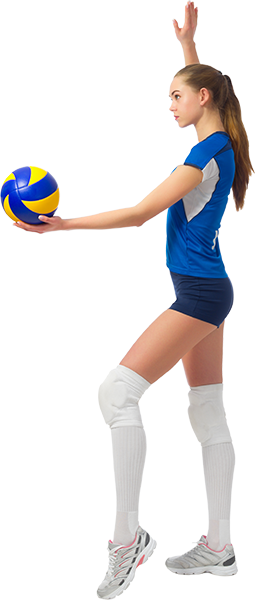
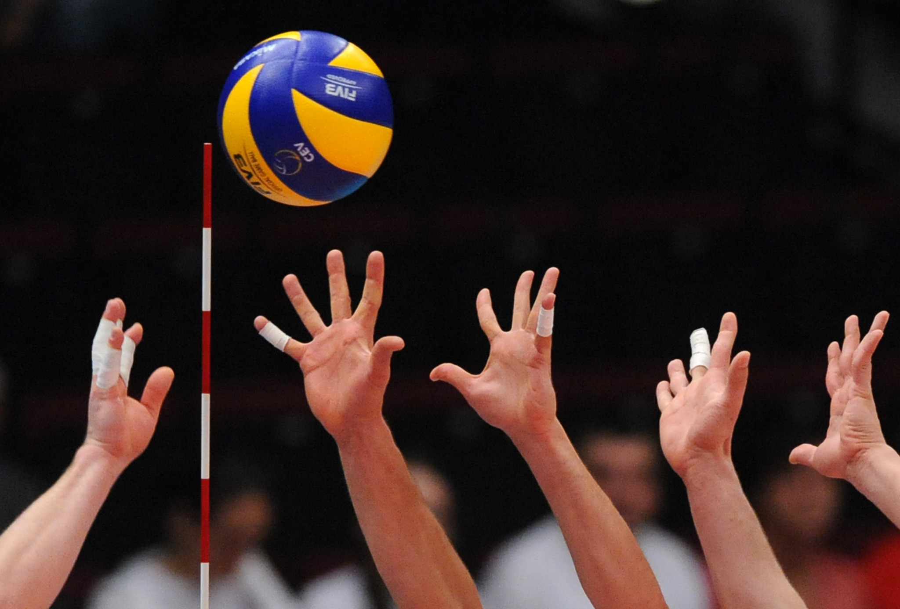

Înveți că poți face tot ce poți chiar și atunci când este greu, chiar și atunci când ești obosit și poate te doare puțin. E bine să dai dovadă de curaj. — Joe Namath
Timp de aproximativ 20 de minute, jucătorii își frământă bine gâtul, brațele, spatele, genunchii și gleznele pentru a evita rănirea în timpul antrenamentului suplimentar. Antrenorii buni nu se obosesc să repete că, cu cât mușchii sunt mai bine încălziți, cu atât este mai mică probabilitatea de rănire.
În timpul antrenamentului, aproximativ o oră de timp este dedicată exersării tehnicilor de bază (livrarea mingii, blocare etc.).
În fiecare sesiune, aproximativ 30-40 de minute de timp de antrenament ar trebui să fie dedicate jocului. În timpul jocului, abilitățile tehnice dobândite în timpul procesului de antrenament sunt fixate, în plus, începeți să înțelegeți procesul jocului în sine și să găsiți înțelegere reciprocă cu partenerii.
După terminarea jocului, este necesar să întindeți puțin mușchii pentru ca, la scurt timp după antrenament, să nu înceapă să doară.
Și nu uitați că doar performanța de înaltă calitate a exercițiilor la antrenament vă va permite să vă îmbunătățiți sportul ales - volei.
Nu joci niciodata cu adevarat impotriva unui adversar. Ci joci cu tine insuti, cu cele mai inalte standarde ale tale, iar cand iti atingi limitele, atunci esti fericit cu adevarat.
